01MONOGRAM

连结
把 S 与 Y 收进一个紧凑的字母结构。轮廓明确，适合导航栏与小图标。
小尺寸
轮廓测试

3224
16
PERSONAL IDENTITY / 01
为黑色作品集的左上角设计。三个方向，都以姓名为起点；在大图、导航栏和小图标里一起比较。

把 S 与 Y 收进一个紧凑的字母结构。轮廓明确，适合导航栏与小图标。
小尺寸
轮廓测试

32
用连贯的曲线组织 S 与 Y，呼应首页的光学空间。更流动，也更偏视觉表达。
小尺寸
轮廓测试

32
让 Selina Yang 本身成为识别。以姓名字形和排布建立个人感，更强调设计师的署名。
小尺寸
轮廓测试

32以你的网站留白、字号与导航高度为背景，检查标志的存在感和可读性。